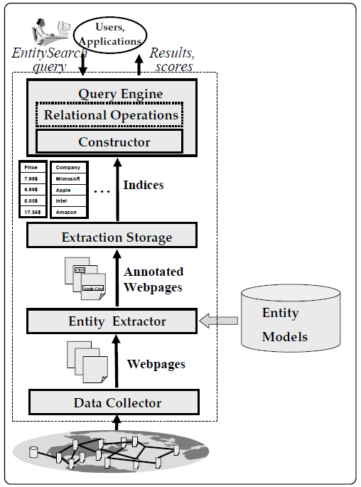

CIDR 2007 - Entity Search Engine
Table of Contents
1 Info.
Tao Cheng, Kevin Chen-Chuan Chang: Entity Search Engine: Towards Agile Best-Effort Information Integration over the Web. CIDR 2007: 108-113
2 Introduction
Basically, Web should be viewed not merely as a corpus of HTML pages, but as a rich data source, containing rich information of various types.
Entity = paticular type of data/information, e.g. a phone number, a pdf, a ppt, an email addr., etc.
Target: a system for large scale information integration over the Web — search directly for target entities holistically across all pages.
3 Dilemma & Challenge
Combine "IR-style" (searching pages for keywords, not data aware) with "DB-style" (querying integrated structured data, too many data).
- IR-style (search engines)
- cannot query specific type of data/information
- match each page individually
- DB-style (integration systems)
- high cost to build structured data/information sources
- lack of flexibility on the schemas
4 Proposal
4.1 Sample Queries
- (amazon customer service #phone)
- ow(sigmod 2006 #pdf_ file #ppt_ file)
4.2 Framework
- Given
- A collection of entities \(E=\{E_1,E_2,\cdots, E_N\}\) — tagged Web corpus
- Input
- A query \(\beta -\alpha(K_1,K_2,\cdots, K_l,E_1,E_2,\cdots,E_m)\), composed of
- a sequence of keywords \(K_i\) and entities \(E_j\)
- the matching pattern \(\alpha\) e.g. \(\mathtt{ow}\) order-window
- the score measure \(\beta\) for the ranks of the matching instances
- Output
- A list of tuples ranked by matching scores
4.3 Data Model
Entity Collection \(E = \{E_1,E_2,\cdots,E_n\}\), where each entity type \(E_i\) is a set of entity instances \(e_j\) extracted from the corpus, denoted as \(E_i = \{e_j\}\).
4.4 Features
Intergration in a probabilistic sense.
The entities are only associated at query time and extracted independently.
5 System Design
5.1 System Architecture

Figure 1: The architecture of the pilot system
- Data Collector
crawl webpages related with a specific topic/application — from Stanford Web-Base Project
- Entity Extractor
each domain entity is extracted with an entity model
- Query Engine
morphed with Lemur Toolkit, which stores the entities in form of ordered lists.
5.2 Matching Patterns
The webpages are treated as linear documents.
Figure 2: The \(\alpha\) matching patterns supported in the pilot system
Regarding \(\beta\), four quantities are considered:
- Frequency of the tuple — how many times the tuple is matched
- Strength — How well does the tuple match the pattern
- Frequency of entity instance — a tuple may be frequent simply because its entity instances are common
- Uncertainty — the probability of \(e_i\) being of the entity type \(E_i\)
5.3 Scoring Measures
Figure 3: The \(\beta\) scoring measures supported in the pilot system
- \(tf\) - tuple frequency - 1
- \(dtf\) - distance weighted tuple frequency - 1,3
- \(mi\) - mutual information - 1,2
- \(t-score\) -1,3
- \(conf\) - 4
5.3.1 TODO
behind the measures — e.g. Why taking the square root in \(tscore\)?